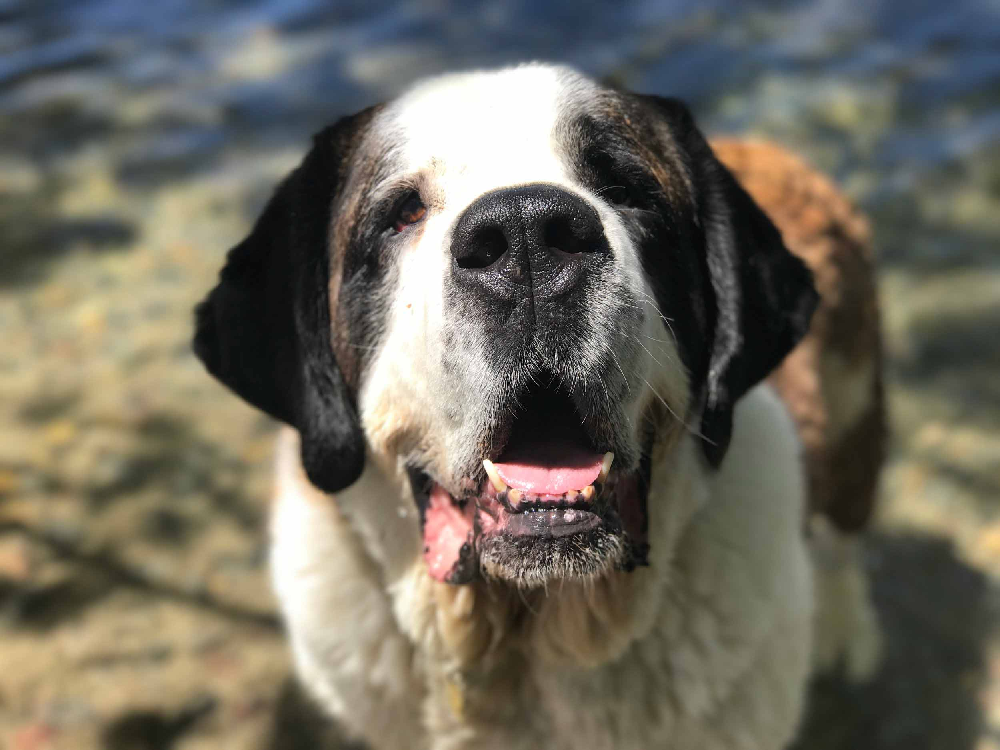
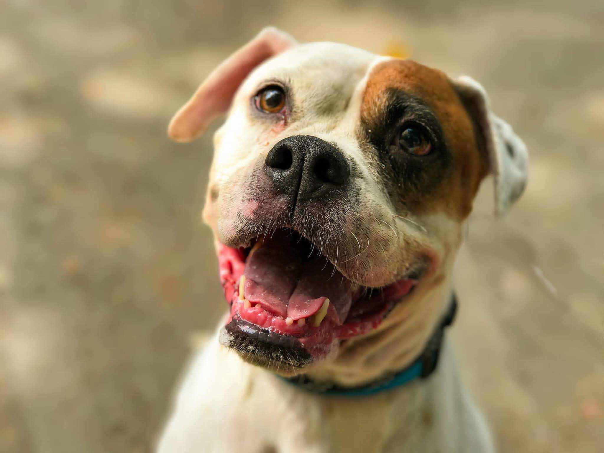
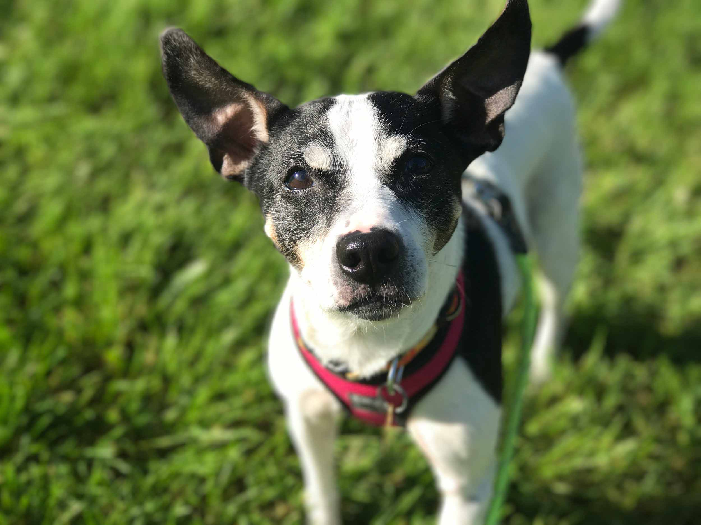

These animals need homes!

Burger
Burger is a male St.Bernard that is approximately 6 years old. Burger is a big boy with a big personality.

Riley
Riley is a female American Bulldog that is approximately 5 years old. She is incredibly laid back and easy going - always happy to make herself comfortable on her bed, or join you for a walk.

Snoopy
Snoopy is a male Rat Terrier who is approximately 10 years old. Snoopy is one spunky old man. He’ll befriend anyone with a treat, and when you’re close enough friends, he’ll even ask you for butt rubs.